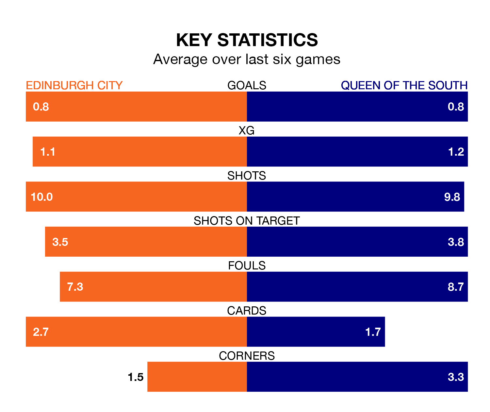

Saturday's match at the Meadowbank Stadium sees two relegation candidates play each other, as bottom of the table Edinburgh City host seventh-placed Queen of the South.
Edinburgh have picked up 10 points from their first 10 League One games, with two wins and four draws.
That is 18 points less than the Doonhamers have collected, having won eight and drawn four.
Edinburgh are in terrible form in League One, with no wins and a draw from their last six games.
With two wins and two draws over that period, Queen of the South's form is much better – they have taken eight points from 18, compared to City's one.
In the last 10 years, Edinburgh and Queen of the South have played each other on eight occasions. Queen of the South won all of them.
On average, Edinburgh scored 0.5 goals and the Doonhamers 3.0 in those matches.
Their last meeting was on December 16, when Queen of the South won 3-1 at home.
The Doonhamers's Gavin Reilly is among the league's most creative players, racking up six assists in 19 appearances so far this season, and holding second spot in League One's assist charts.
For the home side, Innes Murray, Ryan Shanley, Robert Mahon and Scott Mercer have set up the most goals, having laid on two assists apiece to date.
With 29 goals in 24 games so far this season, Edinburgh are the league's second-lowest scorers with 1.2 goals per game. And they are conceding more than average, letting in 68 goals at a rate of 2.8 per game.
The visitors are also below average scorers, with 1.2 goals per game, compared to a league average of 1.5. They have conceded 1.5 goals per game.
Edinburgh's last match was on Tuesday, a 3-2 loss against Kelty Hearts, with Findlay Marshall and Oliver McDonald getting the goals for Edinburgh.
Queen of the South drew 0-0 with Kelty Hearts last time out, on February 10.
Updated: 12:06 (UTC), 15/02/24